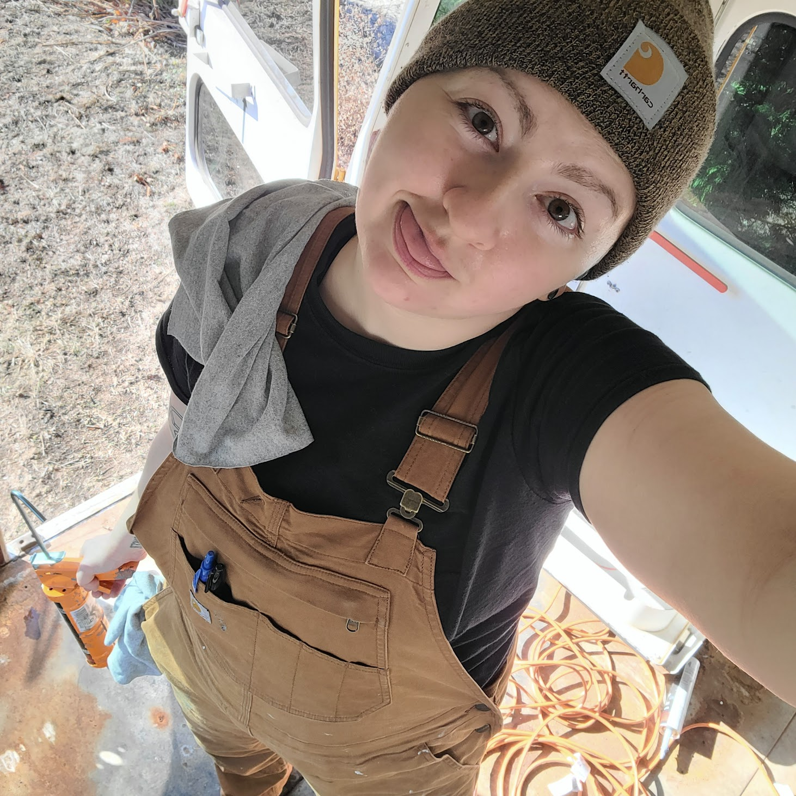

A lot of you visiting this page know me in real life, but for those of
you who don't: hello, I'm Em! I'm converting a school bus into a tiny
home whilst simultaneously learning to code through a program called
SheCodes. I had been posting my bus progress on Instagram but got off
most social media recently. I missed updating my friends and family
through photos, so I figured might as well test my coding skills and
put together a website to keep people in the loop! So yeah, welcome to
the maddness!
A little about me, for those who I don't know: I have three dogs and
one cat, and my favorite thing is to be outdoors with them. I enjoy
plants, books, making art, learning new things, jamming out to [often
nerdy] music, exploring nature, and napping. I plan to live on the
road with my little animal family once the bus is complete. The idea
is we'll live nomadically until I find a place I like enough to stick
around in. Spoiler alert, I'm betting it's somewhere in the southwest
United States!
You can get to know the dogs over on The Wright Crew page, and you can
follow more detailed bus progress on The Birdie Journey page. The
coding should speak for itself and hopefully this site will get more
impressive with time!